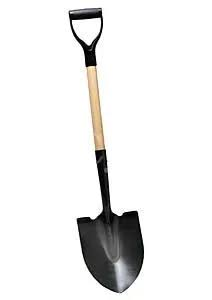
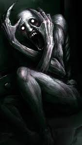
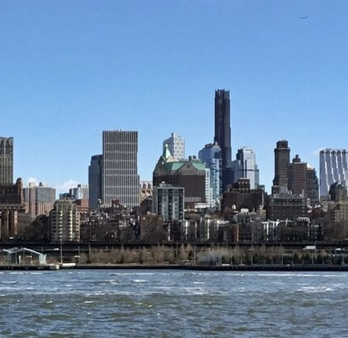
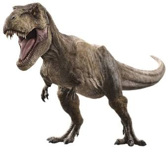
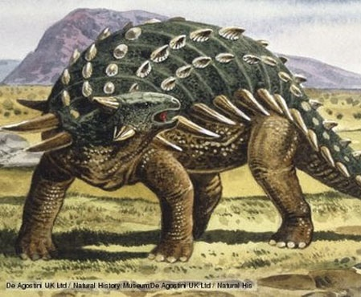

The Fact Library
This website is a unoffical wiki
Shovels

A shovel is a tool used for digging, lifting, and moving bulk materials, such as soil, coal, gravel, snow, sand, or ore. Most shovels are hand tools consisting of a broad blade fixed to a medium-length handle. Shovel blades are usually made of sheet steel or hard plastics and are very strong. Shovel handles are usually made of wood (especially specific varieties such as ash or maple) or glass-reinforced plastic (fiberglass).
Scp-096

Object Class: Euclid
Special Containment Procedures: SCP-096 is to be contained in its cell, a 5 m x 5 m x 5 m airtight steel cube, at all times. Weekly checks for any cracks or holes are mandatory. There are to be absolutely no video surveillance or optical tools of any kind inside SCP-096's cell. Security personnel will use pre-installed pressure sensors and laser detectors to ensure SCP-096's presence inside the cell.
Any and all photos, video, or recordings of SCP-096's likeness are strictly forbidden
Spaceships
A spacecraft is a vehicle that is designed to fly and operate in outer space.[1] Spacecraft are used for a variety of purposes, including communications, Earth observation, meteorology, navigation, space colonization, planetary exploration, and transportation of humans and cargo. All spacecraft except single-stage-to-orbit vehicles cannot get into space on their own, and require a launch vehicle (carrier rocket).
The Mars Rover
A Mars rover is a remote-controlled motor vehicle designed to travel on the surface of Mars. Rovers have several advantages over stationary landers: they examine more territory, they can be directed to interesting features, they can place themselves in sunny positions to weather winter months, and they can advance the knowledge of how to perform very remote robotic vehicle control. They serve a different purpose than orbital spacecraft like Mars Reconnaissance Orbiter. A more recent development is the Mars helicopter.
Brooklyn

Brooklyn is the most populous of the five boroughs of New York City, coextensive with Kings County, in the U.S. state of New York. Located at the westernmost end of Long Island and formerly an independent city, Brooklyn shares a land border with the borough and county of Queens. It has several bridge and tunnel connections to the borough of Manhattan, across the East River (most famously, the architecturally significant Brooklyn Bridge), and is connected to Staten Island by way of the Verrazzano-Narrows Bridge.
T-Rex

Tyrannosaurus (/tɪˌrænəˈsɔːrəs, taɪ-/)[a] is a genus of large theropod dinosaur. The type species Tyrannosaurus rex (rex meaning 'king' in Latin), often shortened to T. rex or colloquially t-rex, is one of the best represented theropods. It lived throughout what is now western North America, on what was then an island continent known as Laramidia. Tyrannosaurus had a much wider range than other tyrannosaurids. Fossils are found in a variety of geological formations dating to the latest Campanian-Maastrichtian ages of the late Cretaceous period, 72.7 to 66 million years ago, with isolated specimens possibly indicating an earlier origin in the middle Campanian. It was the last known member of the tyrannosaurids and among the last non-avian dinosaurs to exist before the Cretaceous–Paleogene extinction event.
The Ankylosaurus

The Ankylosaurus was a huge, plant-eating dinosaur that lived at the end of the Cretaceous period. It grew up to 25 feet long and was covered in thick, bony plates that acted like armor, even protecting its eyelids. Its most famous feature was the heavy, bony club on the end of its tail, which it could swing hard enough to injure predators like T. rex. Despite looking fierce, Ankylosaurus was a slow, peaceful grazer that spent its days munching on low plants like ferns and shrubs.